Parking in Hungary requires careful attention to yellow line markings, time-based restrictions, and zone designations. From understanding solid, broken, and zig-zag yellow lines to navigating ZONA signs and special parking areas, Hungarian parking rules demand precision. Violating these rules can result in substantial fines and vehicle towing.
This guide decodes every parking sign and restriction you'll encounter on Hungarian roads. Whether you're a resident, visitor, or regular commuter, you'll learn what each sign means, where you can park, and how to avoid costly penalties across Hungary's cities and regions.
Key Takeaways
- Solid yellow lines mean no stopping and no parking under any circumstances
- Broken yellow lines allow passenger drop-off/pick-up but prohibit parking
- Zig-zag yellow lines are the strictest—no stopping or parking
- Time-based restrictions (periods of time, hours) regulate when parking is allowed
- ZONA signs mark parking zones; always check supplementary signs for rules
- Parking fines in Hungary range from 10,000-30,000 HUF (fines)
Understanding Curb Markings: Yellow Lines
Hungarian curb markings are essential for understanding parking rules. Yellow lines are the primary indicators of parking restrictions, with different line styles conveying different levels of restriction. Solid, broken, and zig-zag yellow lines each have distinct meanings that drivers must understand to avoid violations.
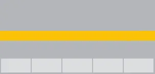
Solid Yellow Line (No Stopping, No Parking)
Prohibits both stopping and parking. No vehicles may stop or park along this curb, even briefly.
- Main roads and traffic-heavy areas
- Near fire hydrants
- Bus stops and transit zones
- Emergency vehicle routes
Fine: 10,000-20,000 HUF (fines)
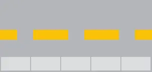
Broken Yellow Line (Passenger Drop-off/Pick-up Allowed)
No parking allowed, but stopping briefly for dropping off or picking up passengers is permitted.
- Only for passenger transfer
- Brief stops only (not for loading cargo)
- Driver must remain in vehicle or nearby
- Parking is strictly prohibited
Fine: 10,000 HUF (€25) if parking instead of drop-off
Yellow Line Variations & Special Markings
Beyond solid and broken lines, Hungarian parking regulations include zig-zag yellow lines as the most restrictive curb marking. Additionally, time-based and distance-based restrictions provide supplementary information about when and where parking rules apply.
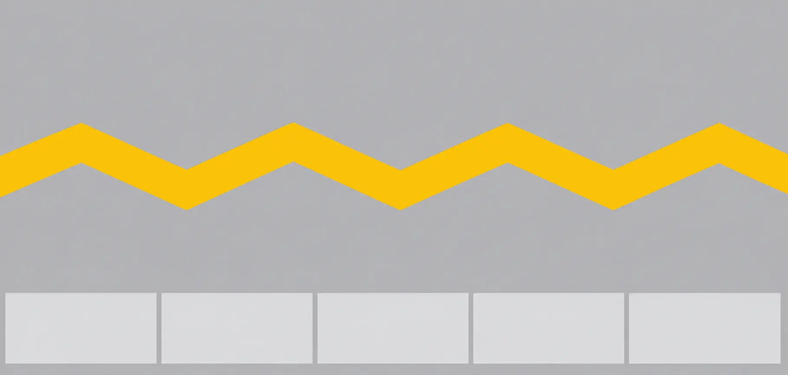
Zig-Zag Yellow Line (Most Restrictive)
Absolute prohibition on both stopping and parking. The strictest yellow line marking in Hungary.
- School zones during drop-off/pick-up hours
- Hospital entrances
- Emergency access routes
- High-congestion areas
Fine: 15,000-20,000 HUF (fines)
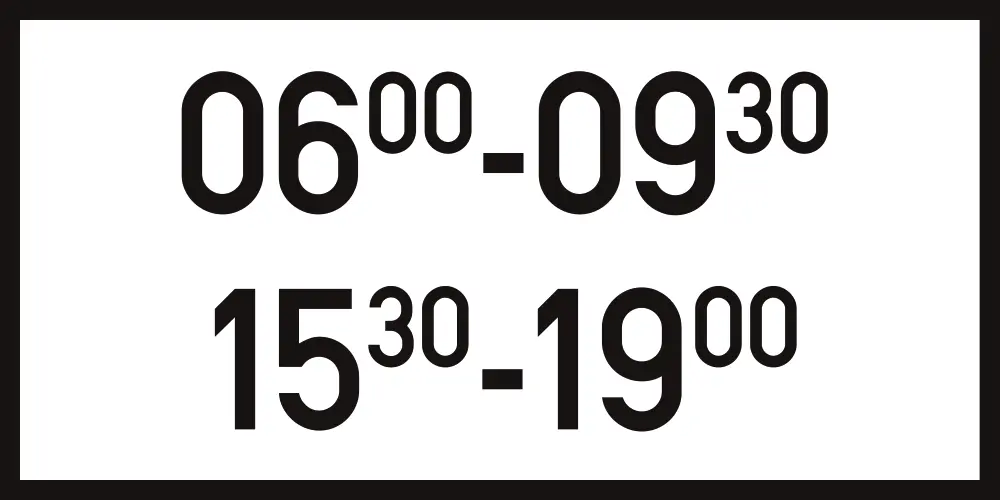
Period of Time (Time Window Restriction)
Parking restricted during specific hours shown on sign (e.g., 06:00-09:30, 15:30-19:00).
- Parking prohibited during marked hours
- Multiple time windows may apply
- Common in residential areas during peak hours
- Check sign for exact time ranges
Fine: 10,000-15,000 HUF (fines) for violating time windows
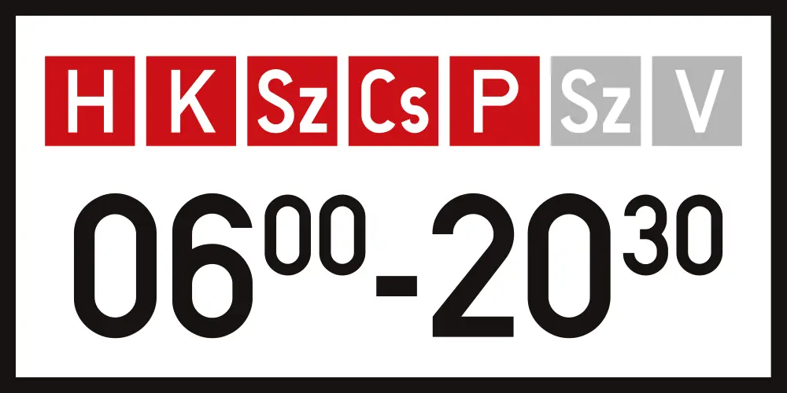
Days of Week & Period of Time
Restrictions apply only on specific days of the week during designated hours.
- Monday-Friday 06:00-20:30: Weekday restrictions
- Sundays/holidays may have different rules
- Street cleaning days often have restrictions
- Always note both day and time requirements
Fine: 10,000-15,000 HUF (fines)
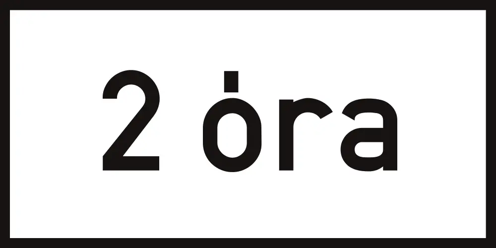
Period of Time in Hours (2 óra)
Maximum parking duration in hours. Sign indicates how long you can stay parked.
- 2 óra = 2 hours maximum
- 1 óra = 1 hour maximum
- 30 perc = 30 minutes maximum
- Overstaying results in fines
Fine: 10,000 HUF (€25) for exceeding duration
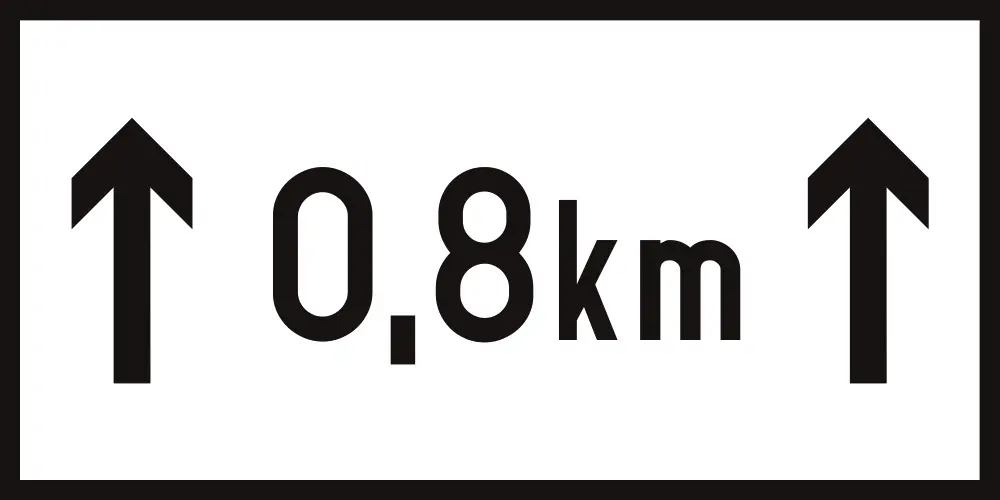
Length While Sign Is Enforced (Distance Marker)
Indicates how far the parking restriction extends (e.g., ↑ 0,8km ↑).
- Shows affected road segment length
- Restriction applies for entire distance
- Essential for long streets with extended zones
- Helps drivers find unrestricted parking beyond the zone
Info: Helps identify exact restriction boundaries
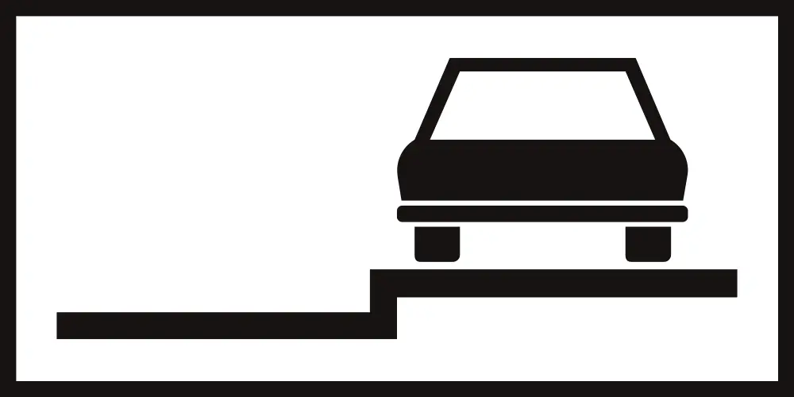
Parking on Sidewalk in Full Formation
Permits parking on the sidewalk with vehicle fully positioned (all wheels on sidewalk).
- Vehicle must be entirely on sidewalk
- All four wheels positioned correctly
- Must not obstruct pedestrian pathways
- Check local regulations for width requirements
Info: Allowed only where sign permits
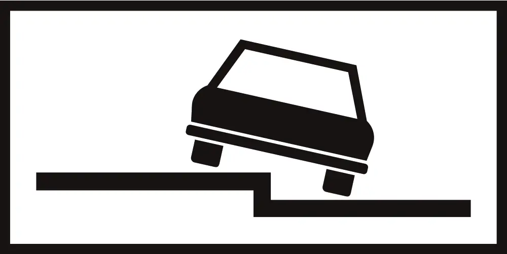
Parking on Sidewalk with Half Wheel
Permits parking with one set of wheels on sidewalk and one on street (half-on sidewalk).
- Vehicle partially on street, partially on sidewalk
- Specific parking angle indicated on sign
- Commonly used on narrower streets
- Must not block pedestrian traffic
Info: Allows more vehicles per street segment
No Parking & Stopping Zones
Hungarian no-parking zones use specific signs to indicate absolute prohibitions. Red circles with blue X symbols denote areas where parking is entirely prohibited. ZONA signs also mark special restricted areas. Understanding these signs is critical to avoiding heavy fines and vehicle towing.
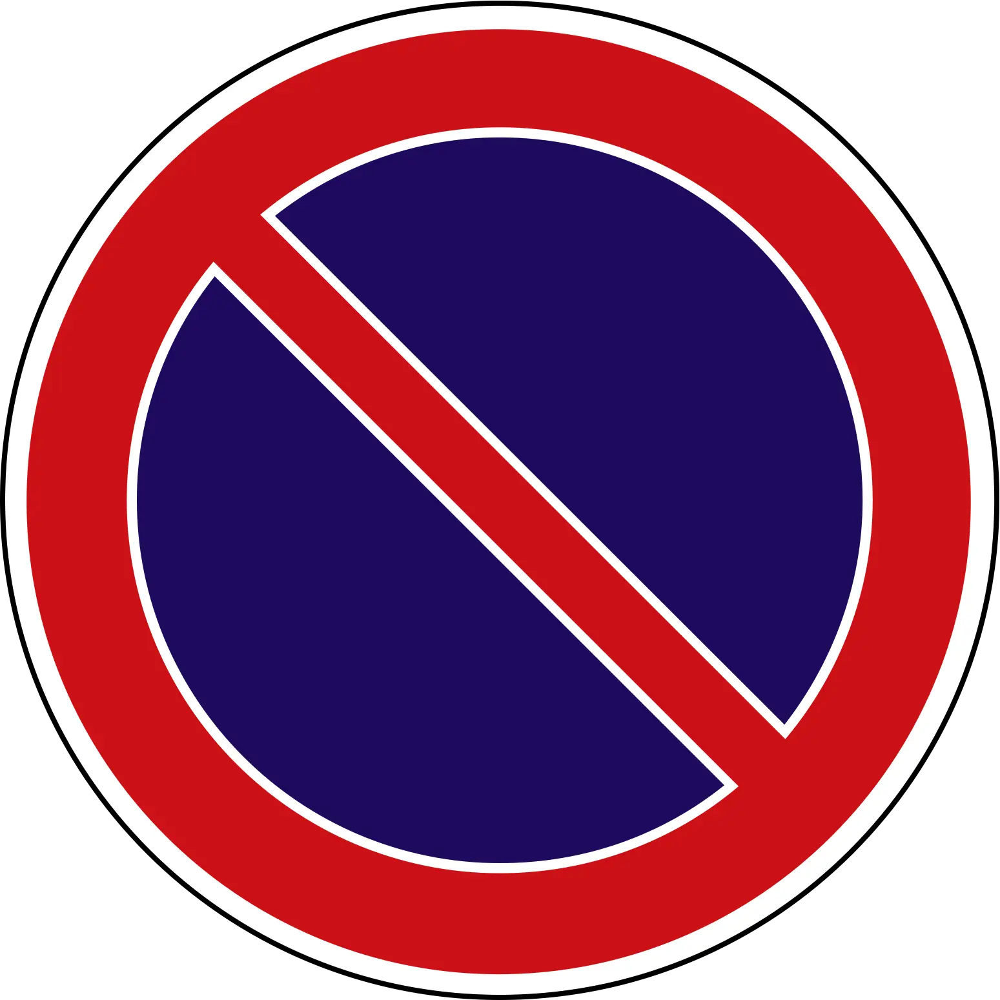
No Parking Zone
Absolute prohibition on parking. Red circle with blue X indicates vehicles will be towed.
- Near pedestrian crossings
- Bus stops and taxi stands
- Fire hydrants and emergency exits
- Loading zones
Fine: 15,000-25,000 HUF (fines) + possible towing
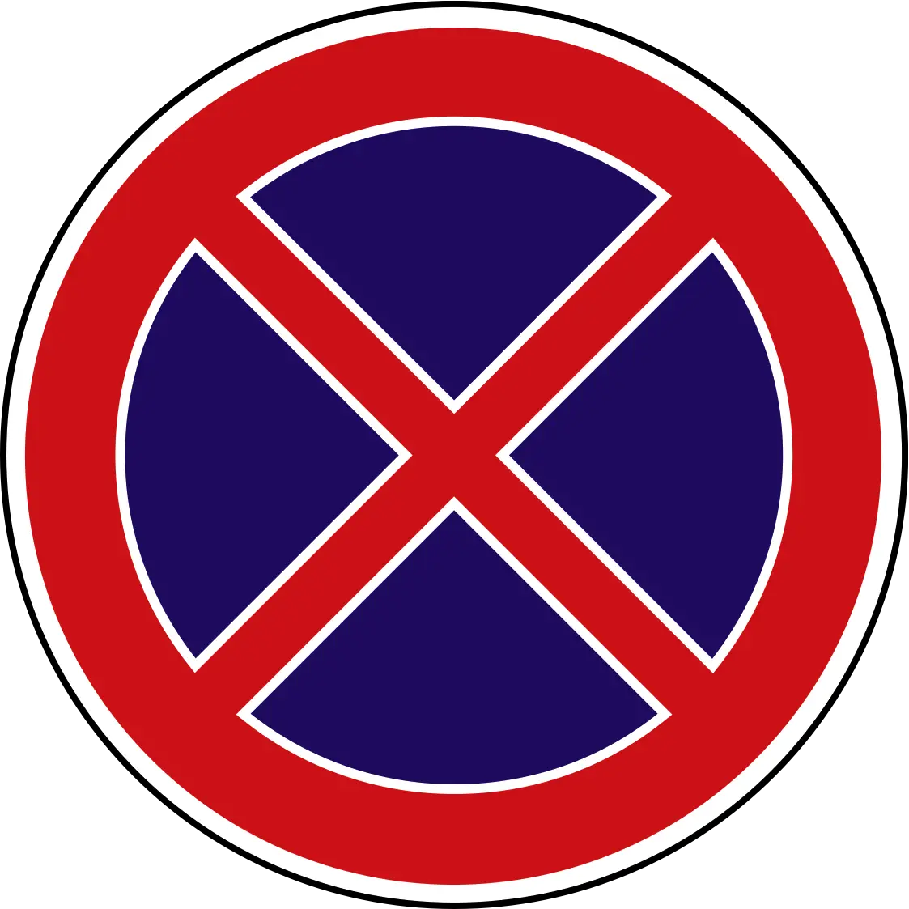
No Stopping Zone
Prohibition on stopping and parking. No temporary stops allowed, not even for passenger drop-off.
- All vehicles equally
- Any duration of stopping
- No loading, no passenger drop-off
- Strict enforcement with high fines
Fine: 15,000-25,000 HUF (fines) + possible towing
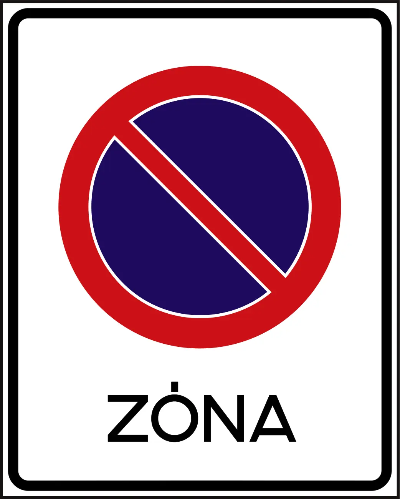
No Parking Zone (ZONA)
ZONA sign with prohibition symbol indicates a designated no-parking area.
- Clearly marked zone boundaries
- Parking prohibited throughout entire zone
- May have time-based exceptions
- Check for supplementary signs
Fine: 15,000-25,000 HUF (fines)
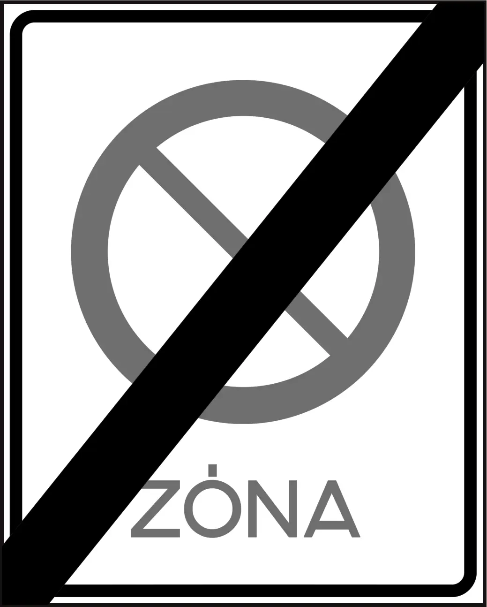
End of No Parking Zone
Marks the end of a no-parking restriction. Parking may be allowed beyond this point.
Authorized Parking Zones & Special Areas
Hungarian parking zones use P signs to mark authorized parking areas. These zones may be free or metered, and some are reserved for specific vehicle types or users. ZONA signs combined with P symbols indicate where parking is permitted, often with restrictions on duration, payment, or vehicle type.
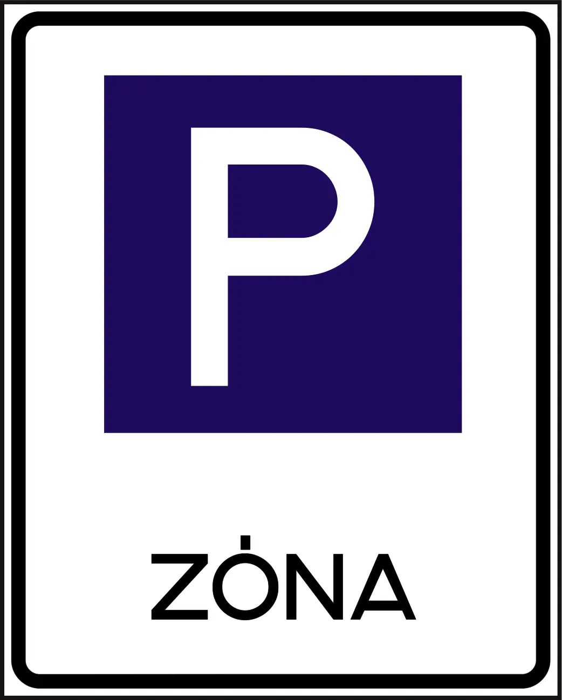
Parking Zone (P ZONA)
Designated parking area where parking is allowed. Check supplementary signs for time limits and payment requirements.
- May be free or metered parking
- Time limits may apply
- Check posted signs for restrictions
- Boundaries marked by zone signs
Fine: 10,000 HUF (€25) for overstaying or non-payment
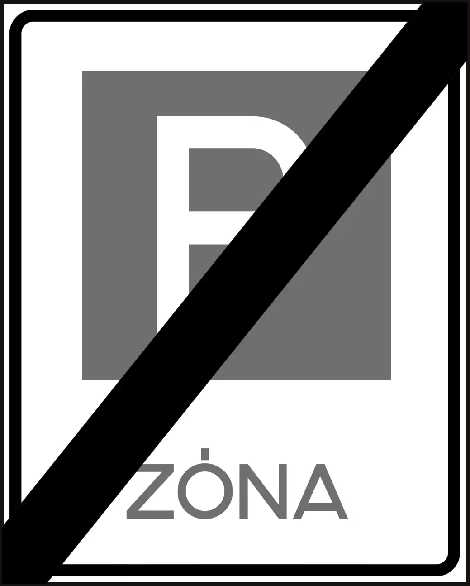
End of Parking Zone (ZONA)
ZONA sign with line through it indicates the end of a parking zone restriction.
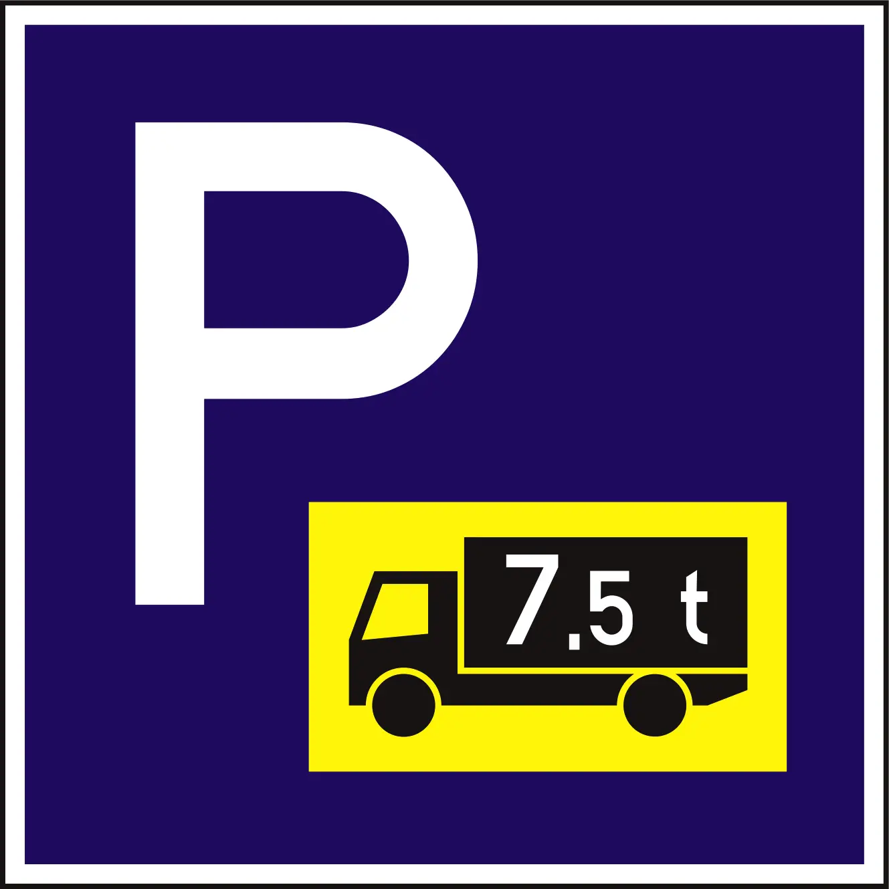
Parking for Trucks (P ZONA)
Reserved exclusively for truck and commercial vehicle parking. General passenger vehicles not permitted.
- For commercial vehicles only
- Passenger cars prohibited
- Check weight and size restrictions
- May have time limitations
Fine: 15,000 HUF (€37) for unauthorized parking
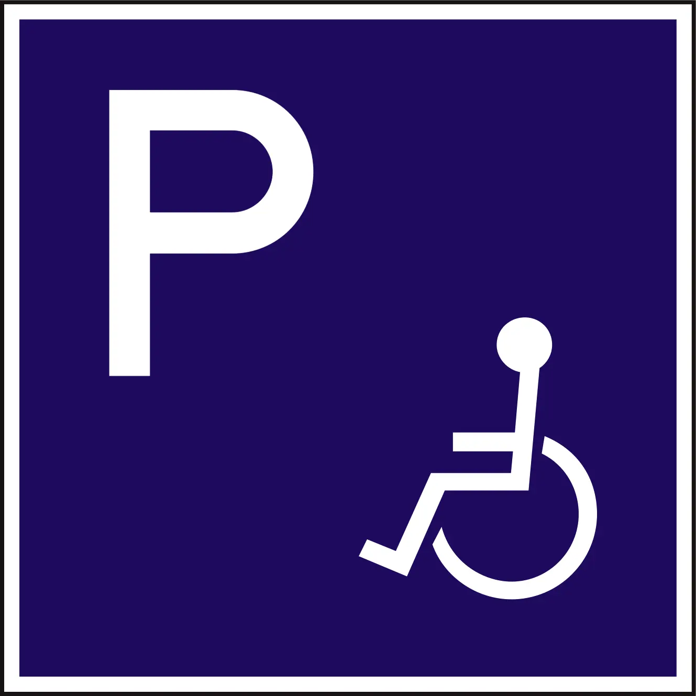
Parking for People with Reduced Mobility
Reserved exclusively for disabled drivers with valid wheelchair or reduced mobility permits.
- Display valid disabled permit on dashboard
- Usually free and unlimited parking
- EU-recognized permits accepted
- Unauthorized parking prohibited
Fine: 20,000 HUF (€50) for unauthorized parking
Parking Methods & Management Systems
Hungarian parking includes different payment and time-management systems. Parking meters require cash payment or app payment, while parking disc systems allow free parking for a limited time. Some areas use both systems. Understanding which system applies in each zone is essential for avoiding violations.
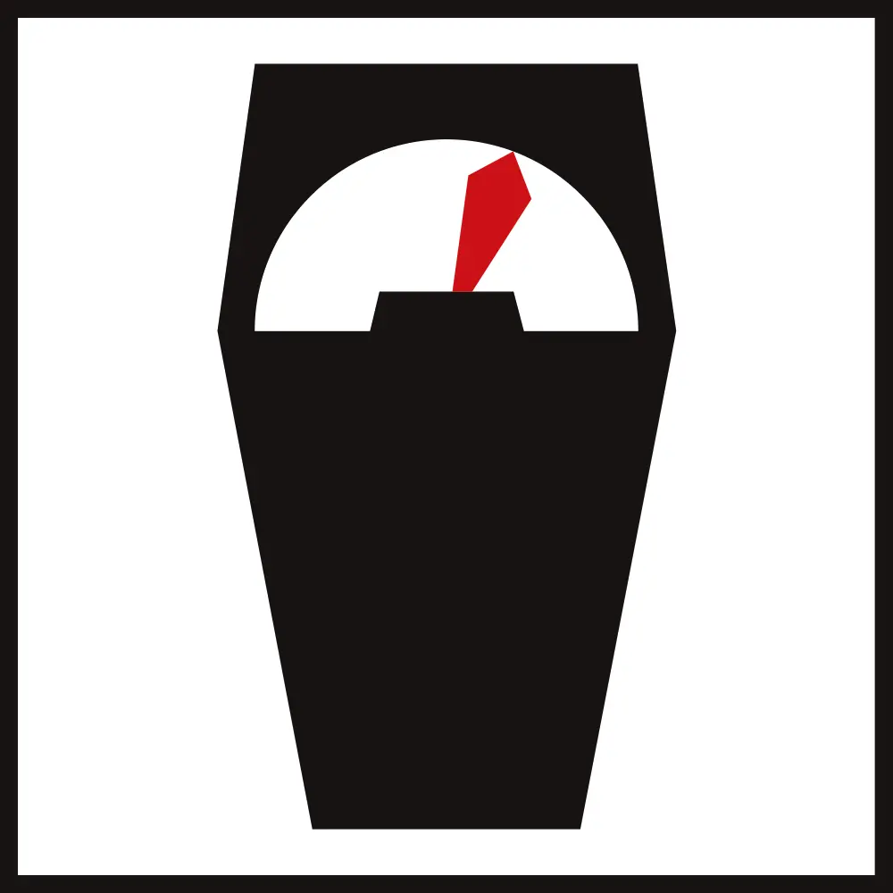
Parking Meter
Indicates paid parking with parking meter or app payment required.
- Pay at nearby parking meter
- Display ticket or payment confirmation
- Check posted rates and time limits
- Many areas accept app payments
Fine: 10,000 HUF (€25) for non-payment or overstay
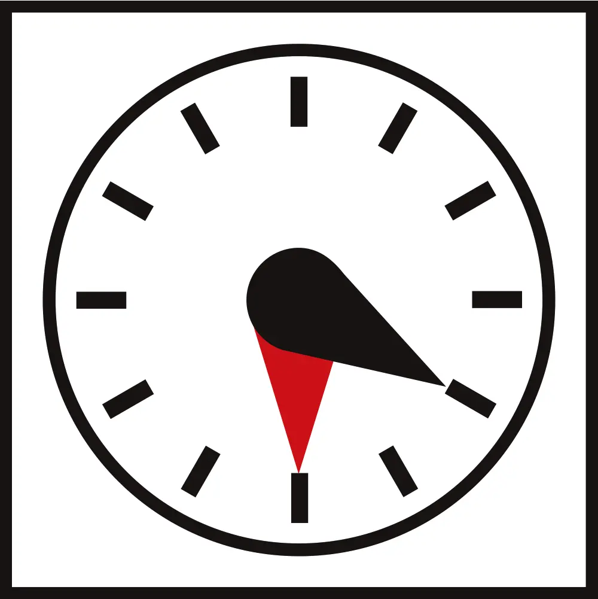
Place Clock in Dashboard (Disc Parking)
Indicates disc parking zone. Display parking disc showing arrival time.
- Free parking with valid disc
- Set disc to your arrival time
- Discs available at petrol stations
- Check sign for maximum duration
Fine: 10,000 HUF (€25) for exceeding time limit or missing disc
How Curb Helps You Park with Confidence
Understanding Hungarian parking rules is crucial, but applying them correctly in real-time is where drivers struggle. Hungarian parking signs involve yellow lines, time windows, distance markers, and zone designations—all simultaneously. You're standing on the street trying to decode a yellow line, a time restriction, a distance marker, and a supplementary zone sign—all while deciding whether it's safe to park here.
That's where Curb comes in.
Curb's AI-powered parking sign analysis instantly scans any parking sign and tells you exactly what the rules are:
- Whether you can park right now based on the current time and date
- What restrictions apply (yellow line type, time limits, zone rules)
- What the fine is if you violate the rule
- Whether you need a disc, payment, or special permit
- How long you can safely park
Instead of guessing, you get a clear verdict in seconds: "You can park here for 2 hours. After that, you will be fined." Or: "This is a no-parking zone. Do not park—your car will be towed."
For drivers navigating Hungarian streets, visiting new cities, or managing the complex variations in local rules, Curb removes the guesswork entirely.
Get Curb on the App Store
Download Curb and start scanning parking signs today.
The Bottom Line: Know the Rules, Avoid the Fines
Parking in Hungary doesn't have to be stressful. The rules are logical once you understand them: yellow lines indicate curb restrictions, ZONA signs mark special zones, and time-based restrictions are clearly posted. Most violations stem from simply misunderstanding yellow line types or ignoring zone markers.
The key is to carefully read every sign and verify the current time before parking. If you're unsure about a zone's restrictions, take a moment to verify or ask a local. The 30 seconds you spend checking could save you 10,000+ HUF and the hassle of paying a fine or worse, having your car towed.
And if you want instant clarity on any parking sign, download Curb. Whether you're in Budapest, Debrecen, Szeged, or any Hungarian city, Curb's AI analysis gives you the confident answer you need—instantly.
Frequently Asked Questions
Yellow lines in Hungary indicate parking restrictions. A solid yellow line means no stopping and no parking. A broken yellow line allows dropping off or picking up passengers but prohibits parking. A zig-zag yellow line means no stopping and no parking under any circumstances.
Hungarian parking signs often include time windows (e.g., 06:00-09:30, 15:30-19:00) showing when restrictions apply. A "Period of time in hours" sign (e.g., 2 óra) indicates maximum parking duration. Distance markers (e.g., ↑ 0,8km ↑) show how far restrictions extend. Violating these time-based rules results in fines of 10,000-15,000 HUF.
Solid yellow lines prohibit both stopping and parking. Broken yellow lines are less strict—they allow brief stops for dropping off or picking up passengers, but parking is prohibited. Zig-zag yellow lines are the most restrictive, prohibiting both stopping and parking without exception.
ZONA signs mark special parking zones in Hungary. A ZONA sign with a red X and blue circle indicates a no-parking zone. ZONA signs with P indicate parking zones (free or metered). Parking for people with reduced mobility (wheelchair symbol) and parking for trucks (truck symbol) are also zone-specific. Always check supplementary signs for time restrictions and payment requirements.
Parking violations in Hungary typically result in fines ranging from 10,000-30,000 HUF (approximately fines), depending on violation severity. Parking in no-parking zones costs 15,000-25,000 HUF, violating yellow line restrictions costs 10,000-20,000 HUF, and exceeding time limits costs 10,000 HUF. Fines are enforced by traffic police.
Download Your Free Hungary Parking Rules Cheat Sheet
Get a one-page reference guide with all Hungary parking signs, zones, time restrictions, and fine amounts—perfect for printing or keeping on your phone.
Download the Free PDF